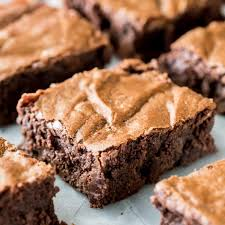

Homemade Chocolate Walnut Brownies

Description
A delicious recipe for homemade brownies to enjoy with friends and family.
Ingredients
- 3/4 cup butter
- 3/4 cup chocolate chips
- 2/3 cup unsweetened coca powder
- 1 1/2 cup sugar
- 1 cup flour
- 1/2 teaspoon baking powder
- 1/2 teaspoon vanilla extract
- 4 eggs
- 3/4 cup chopped walnuts
Directions
Step 1
- Preheat oven to 350 degrees.
Step 2
- Butter a 9"x9" square baking pan.
Step 3
- In a double boiler over low heat, melt butter and chocolate chips together and remove from heat.
Step 4
- In a separate bowl, combine dry ingredients.
Step 5
- When the chocolate/butter mixture has cooled a little whisk in the eggs and vanilla.
Step 6
- Note: it is important to cool the chocolate/butter mixture or the eggs will cook.
Step 7
- Add the dry ingredients and whisk to combine.
Step 8
- Stir in the chopped walnuts.
Step 9
- Pour batter into prepared baking pan.
Step 10
- Bake for 40-45 minutes or until a knife inserted into center comes out clean.
Return to Home Page